Un recorrido histórico y cultural que revive la gesta de 1806 y la defensa frente a las invasiones inglesas.
En 1806, los vecinos se unieron para recuperar Buenos Aires.
Esa valentía marcó nuestro nacimiento como pueblo.
Te invitamos a recorrer los escenarios reales junto a guías especializadas/os
y el acompañamiento de los municipios del norte del conurbano. Una experiencia
para aprender, reflexionar y sentir el orgullo de nuestras raíces compartidas
a más de 220 años de este hito fundacional de nuestra patria.
Los paseos se realizan todas las semanas en micro,
con entrada libre y gratuita.
En 1806, los vecinos se unieron para recuperar Buenos Aires.
Esa valentía marcó nuestro nacimiento como pueblo.